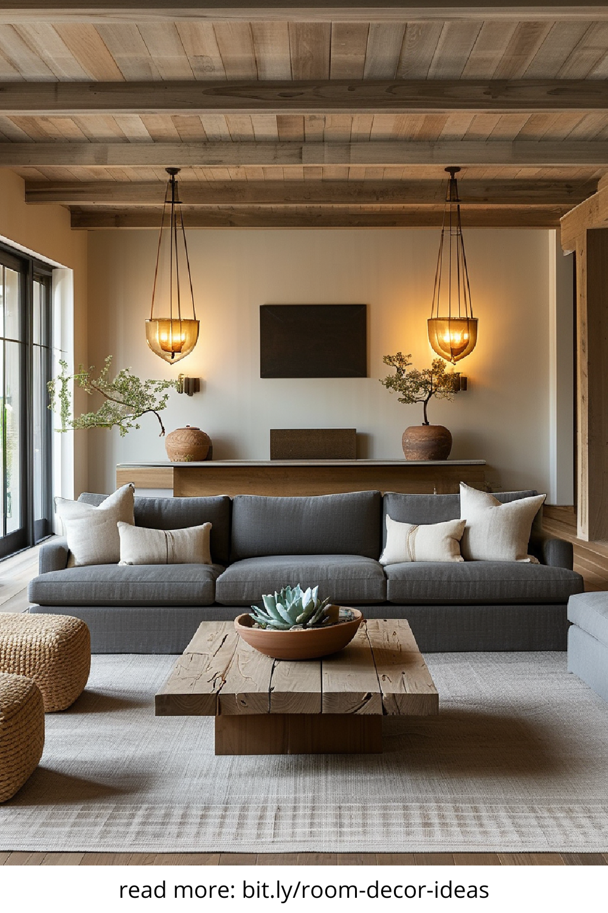
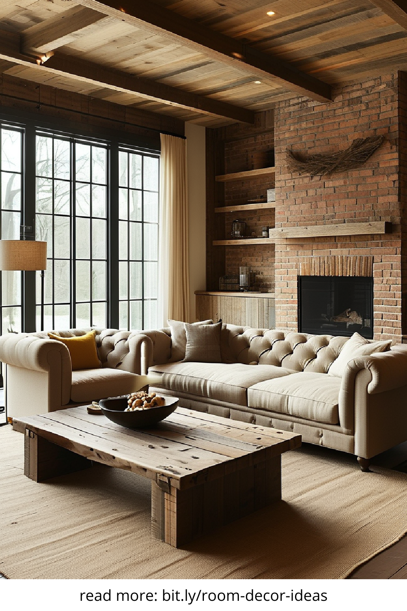
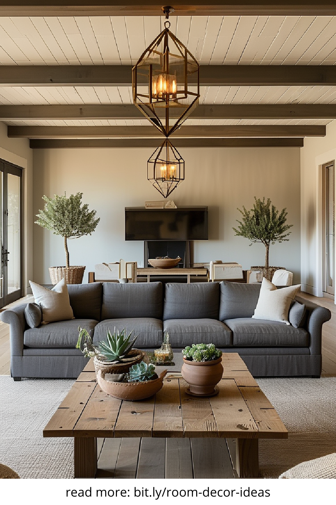
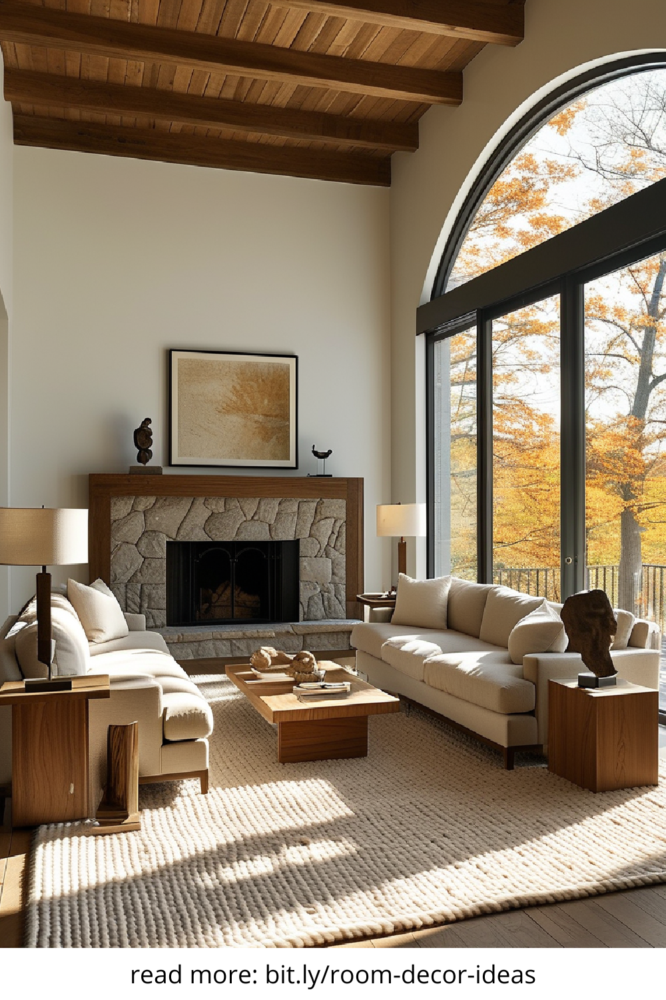

Warm And Minimalist Home Decor
Minimalism doesn’t mean cold or sterile. In fact, the blend of warm and minimalist home decor is one of the most popular interior design trends today. It offers the perfect balance between simplicity and comfort, making your space feel uncluttered yet inviting. In this article, we’ll explore how to master this style and bring a serene, cozy atmosphere into your home without sacrificing elegance or personality.
Embrace Neutral Tones With Natural Accents
One of the most effective ways to create warmth in a minimalist setting is by choosing a neutral color palette. Think soft whites, gentle greys, and earthy beiges. These tones act as a calming backdrop that doesn’t overwhelm the senses. To prevent the space from feeling flat or dull, incorporate natural elements like wooden furniture, rattan accents, or woven textiles. These subtle additions bring texture and visual interest, grounding the space and connecting it to nature.
Choose Functional Furniture With Soft Shapes
Minimalist furniture is known for its clean lines and lack of ornamentation. However, to keep your space feeling warm and livable, opt for pieces that combine functionality with softness. Rounded edges, upholstered chairs, and plush sofas can add a sense of comfort without compromising the minimalist aesthetic. Avoid overly rigid or industrial items—choose designs that invite you to sit, relax, and stay awhile.
Use Layered Lighting To Create Depth And Mood
Lighting plays a key role in setting the tone of any room, especially in warm and minimalist decor. Instead of relying on one overhead fixture, use layered lighting to add warmth and dimension. Floor lamps, table lamps, and wall sconces with warm bulbs help create a cozy ambiance. Consider dimmers or smart bulbs so you can adjust the mood throughout the day. Light bouncing off natural materials like wood or linen further enhances the warmth of the space.
Incorporate Textiles To Add Comfort And Softness
Minimalist homes can sometimes feel too bare—but textiles offer a simple fix. Add throw blankets in soft knits, linen curtains that let in natural light, or a plush rug to anchor a room. Keep patterns minimal and colors muted to maintain the aesthetic. The goal is to introduce tactile elements that invite touch and relaxation, without adding visual clutter.
Display Art And Decor With Purposeful Intention
Minimalist design doesn’t mean you have to eliminate all decor. It just means being intentional. Choose artwork or decorative pieces that truly resonate with you—perhaps a calming landscape, a handmade vase, or a cherished family photo in a sleek frame. Rather than filling every shelf, let items breathe. This curated approach makes each piece stand out more and reinforces the calm, uncluttered energy of the space.
Bring In Greenery For A Touch Of Life And Freshness
Plants are the ultimate bridge between minimalism and warmth. They introduce life, color, and movement in a natural and effortless way. Opt for easy-to-care-for varieties like pothos, snake plants, or fiddle leaf figs. Use minimalist pots—such as ceramic or terracotta—to keep the focus on the plant itself. Whether large or small, greenery softens sharp edges and adds a nurturing feel to your home.
Keep Clutter Away With Stylish Storage Solutions
A key principle of minimalist decor is keeping clutter at bay. That doesn’t mean hiding everything—it means finding attractive storage options that blend seamlessly with your design. Consider built-in shelving, woven baskets, or furniture with hidden compartments. Keep surfaces clear and organized to let the warmth of your chosen elements shine through.
Final Thoughts On Creating A Warm, Minimalist Space
Warm and minimalist home decor isn’t about choosing between style and comfort—it’s about combining both in a harmonious way. By focusing on texture, tone, and intentional design, you can create a space that feels open yet cozy, simple yet full of character. Whether you're decorating a single room or an entire home, let warmth guide your minimalist journey.
   